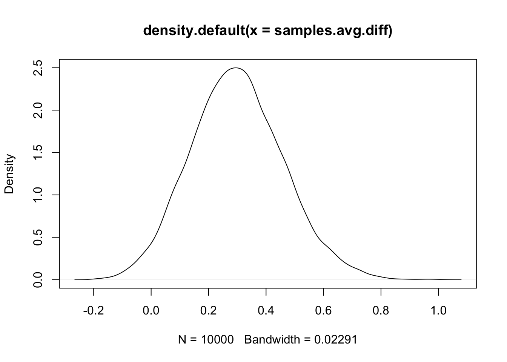

This is an alternative model for the seeds dataset.
We load any packages and set global options. You may need to install these libraries (Installation and general troubleshooting).
library(INLA); rm(list=ls())
options(width=70, digits=2)See BTopic 102 for a description of the dataset and a different model. The following code is re-used from that example.
data(Seeds); dat = Seeds
df = data.frame(y = dat$r, Ntrials = dat$n, dat[, 3:5])family1 = "binomial"
control.family1 = list(control.link=list(model="logit"))Here, we create a similar formula as in BTopic102, except there is no covariates/factors!
hyper1 = list(theta = list(prior="pc.prec", param=c(1,0.01)))
formula1 = y ~ f(plate, model="iid", hyper=hyper1)res1 = inla(formula=formula1, data=df,
family=family1, Ntrials=Ntrials,
control.family=control.family1,
control.compute=list(config=T))
# - use control.compute so that we get to sample from the posteriorsummary(res1)##
## Call:
## c("inla.core(formula = formula, family = family, contrasts =
## contrasts, ", " data = data, quantiles = quantiles, E = E,
## offset = offset, ", " scale = scale, weights = weights,
## Ntrials = Ntrials, strata = strata, ", " lp.scale = lp.scale,
## link.covariates = link.covariates, verbose = verbose, ", "
## lincomb = lincomb, selection = selection, control.compute =
## control.compute, ", " control.predictor = control.predictor,
## control.family = control.family, ", " control.inla =
## control.inla, control.fixed = control.fixed, ", " control.mode
## = control.mode, control.expert = control.expert, ", "
## control.hazard = control.hazard, control.lincomb =
## control.lincomb, ", " control.update = control.update,
## control.lp.scale = control.lp.scale, ", " control.pardiso =
## control.pardiso, only.hyperparam = only.hyperparam, ", "
## inla.call = inla.call, inla.arg = inla.arg, num.threads =
## num.threads, ", " blas.num.threads = blas.num.threads, keep =
## keep, working.directory = working.directory, ", " silent =
## silent, inla.mode = inla.mode, safe = FALSE, debug = debug, ",
## " .parent.frame = .parent.frame)")
## Time used:
## Pre = 2.85, Running = 0.472, Post = 0.0495, Total = 3.37
## Fixed effects:
## mean sd 0.025quant 0.5quant 0.97quant mode kld
## (Intercept) -0.026 0.16 -0.35 -0.025 0.27 -0.022 0
##
## Random effects:
## Name Model
## plate IID model
##
## Model hyperparameters:
## mean sd 0.025quant 0.5quant 0.97quant mode
## Precision for plate 3.16 1.43 1.24 2.88 6.45 2.41
##
## Marginal log-Likelihood: -67.85
## is computed
## Posterior summaries for the linear predictor and the fitted values are computed
## (Posterior marginals needs also 'control.compute=list(return.marginals.predictor=TRUE)')x1We compute the average (on linear predictor scale) for \(x_1=0\) and \(x_1=1\). We ignore the intercept, as that is the same for all observations.
(avg.all = mean(res1$summary.random$plate$mean))## [1] -6.4e-07(avg.x1.0 = mean(res1$summary.random$plate$mean[df$x1==0]))## [1] 0.14(avg.x1.1 = mean(res1$summary.random$plate$mean[df$x1==1]))## [1] -0.16(avg.diff = avg.x1.0 - avg.x1.1)## [1] 0.3From this we see that the plates using seed type 0 had a much lower
probability of success, on average, than those using seed type 1. Let us
investigate the posterior distribution of avg.diff.
n.samples = 10000
samples = inla.posterior.sample(n.samples, result = res1)
(mean(samples[[1]]$latent[(1:nrow(df))][df$x1==0]) - mean(samples[[1]]$latent[(1:nrow(df))][df$x1==1]))## [1] 0.82# - this gives the average difference between the linear predictor values for plates with the two different seed types
samples.avg.diff = unlist(lapply(samples, FUN = function(x) mean(x$latent[(1:nrow(df))][df$x1==0]) - mean(x$latent[(1:nrow(df))][df$x1==1])))
# - this uses the line above in lapply, to get all the samples
summary(samples.avg.diff)## Min. 1st Qu. Median Mean 3rd Qu. Max.
## -0.25 0.19 0.29 0.30 0.41 1.09# - Note that the mean equals avg.diffWe plot the result to see the distribution.
plot(density(samples.avg.diff))
Let us ask the vague question “Is seed sample 0 better than seed sample 1?”. We want to operationalise this question, ie. make it into a statistical formulation that is precise. One common way to do that is to include a coefficient for \(x_1\) in the model and ask “is the posterior of this coefficient significantly different from zero?” One can make a decision theoretic approach and assign a loss function and then draw an optimal conclusion.
But this all depends on the model being the true data generating mechanism.
The model we used here did not have \(x_1\) as a covariate, but we are still answering the same question “Is seed sample 0 better than seed sample 1?”. In this case, we operationalise the question into, “On average, is the difference between the logit probabilities, when using the two seed types, significantly different from zero?”.
The main point I want to make is that You do not need to have the hypothesis as part of the model (to be able to test it)! Even without using \(x_1\) in the model, we can still conclude that seed type 0 is better than seed type 1 on average, in our dataset.
Since both operationalisations, and both models, are somewhat sensible, we expect to get similar results. And we do! In BTopic102 we see that the estimated coefficient is 0.35, and here it is 0.3.
In the end, a model only defines how we believe the data are generated, it does not tell us how to answer questions. So, what is the difference between the two models? The model in BTopic102 claims that there is an unknown difference between the two seeds (that may be zero (but this has a low prior probability)). The model on this page assumes that the data were generated without the two seeds giving different success probabilities.
The result we get in this example (that the average difference is not zero) can be interpreted as “either something very strange happened accidentally, or your model is wrong”.
One very useful way to think about model validity is “how would this model predict new data?” If we do a new experiment, with one of the same plates (and assume that \(x_1\) cannot change when using the same plate), we would predict using the intercept and the posterior of the random effect at that plate. This is sensible. If we do another experiment, this time with a new plate, with seed type 0, what would we predict? With the current model, we would not use the knowledge that we have seed type 0. We would predict with the intercept and a new draw from the iid effect. This is clearly not what we want!